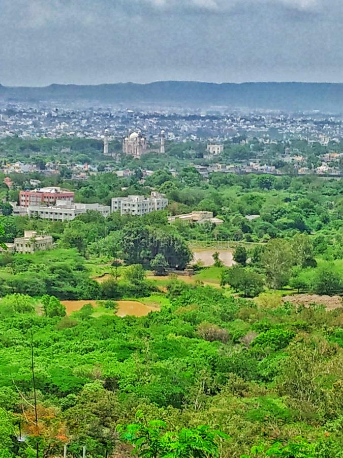

AURANGABAD, MUMBAI, MAHARASHTRA

Aurangabad officially known as Chhatrapati Sambhaji Nagar,also spelt Chhatrapati Sambhajinagar,[9] is a city in the Indian state of Maharashtra. It is the administrative headquarters of Aurangabad district and is the largest city in the Marathwada region. Located on a hilly upland terrain in the Deccan Traps, Aurangabad is the fifth-most populous urban area in Maharashtra with a population of 1,175,116. The city is known as a major production center of cotton textile and artistic silk fabrics. Several prominent educational institutions, including Dr. Babasaheb Ambedkar Marathwada University, are located in the city. The city is also a popular tourism hub, with tourist destinations like the Ajanta and Ellora caves lying on its outskirts, both of which have been designated as UNESCO World Heritage Sites since 1983.Other tourist attractions include the Aurangabad Caves, Devagiri Fort, Grishneshwar Temple, Jama Mosque, Bibi Ka Maqbara, Himayat Bagh, Panchakki and Salim Ali Lake. Historically, there were 52 Gates in Aurangabad, some of them extant, because of which Aurangabad is nicknamed as the "City of Gates". In 2019, the Aurangabad Industrial City (AURIC) became the first greenfield industrial smart city of India under the country's flagship Smart Cities Mission